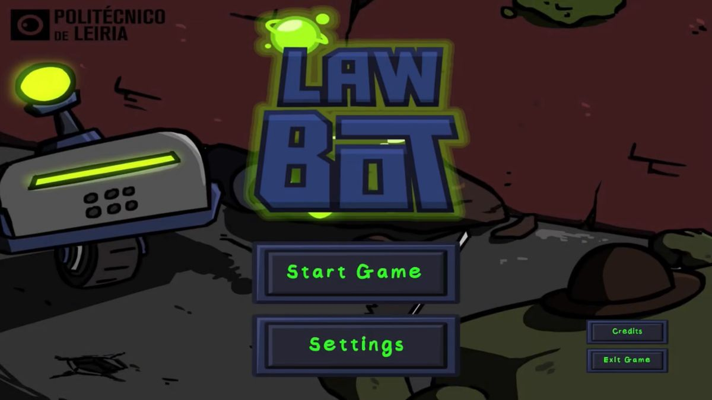
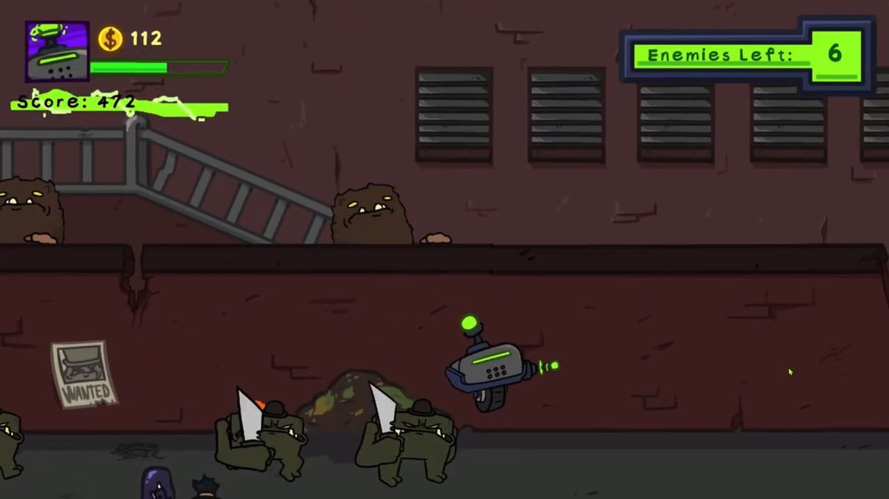
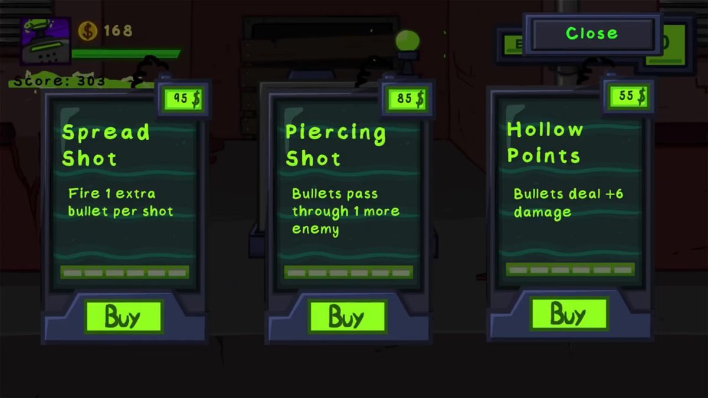
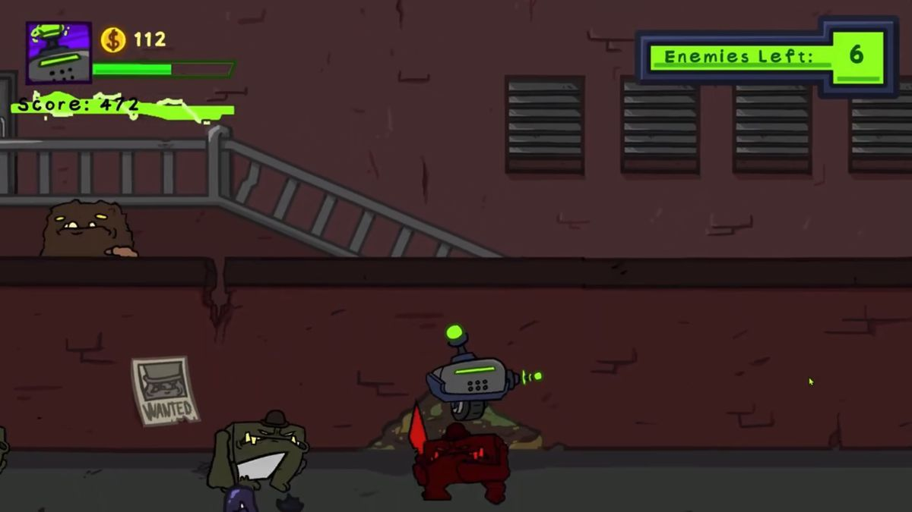

LawBot
Shooter 2D de ação em que controlas um pequeno robô contra rondas de inimigos.
Shooter 2D de ação feito no Politécnico de Leiria. Controlas um pequeno robô que enfrenta rondas de inimigos, desvia-se de ataques e compra upgrades entre rondas. Tem três níveis de dificuldade e um modo infinito.
Fui o programador do jogo e também contribuí para o game design.



- Game developer António Dias
- Game designer Mariana Falcão
- Game artist Joaquim Rodrigues